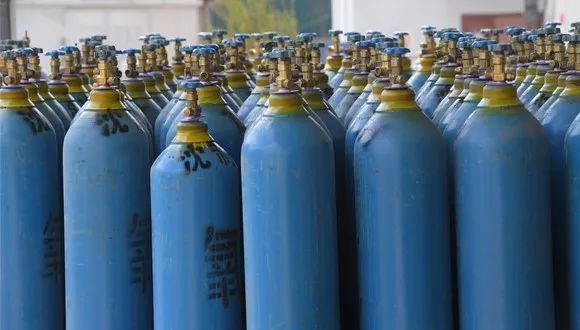

武汉医院缺氧 一线医生呼吁解决供氧问题
原文链接 备份链接 【财新网】（记者 包志明 吴红毓然）为抗击新冠疫情，约1.2万名医护人员已从全国驰援湖北。多位一线医生指出，目前“软件”已经到位，但是“硬件”还跟不上。除了一直较为短缺的防护物资和床位，近期，抢救病人中必备的氧气供应 …
图片来源：视觉中国
记者：庄键
“
武钢集团气体公司解释称，导致医用氧气供应紧张的根源，主要在于医院的硬件。
”
针对武汉医用氧气供应不足的问题，当地最大医用氧气生产商作出了公开回应。
武汉全市一半以上的医院医用氧气，由武钢集团气体公司（下称武钢气体）提供，武钢气体是武汉钢铁有限公司（下称武钢有限）下属企业。
日前，武钢有限通过官方微信发文称，只要医院的供氧系统能力跟得上，武钢气体随时可以提供足量的医用氧气供病人使用，氧气产能及运力完全能满足需求。
武钢气体称，其目前每天可生产约200立方米液态医用氧，制氧能力可达需求量的三倍。
武汉医用氧气紧缺的问题，早前由武汉市肺科医院院长彭鹏对外披露。2月7日，他在新闻发布会上称，除人员和防护用品紧张外，氧气供应也是当前新冠肺炎医疗救治工作中的一个突出问题。
新冠肺炎的重症及危重患者都需要吸氧。彭鹏称，其所在医院的氧气用量已达到日常峰值的10倍以上，氧气供应无法再继续增加。此后，多家媒体陆续跟进报道了武汉医用氧气不足、氧气钢瓶短缺等情况。
对于这一问题，武钢气体解释称，导致医用氧气供应紧张的根源，主要在于医院的硬件层面。
武钢气体指出了多项具体原因，比如武汉大部分医院供氧装备的能力，小于住院部病员满额情况下的氧气需求量。特别是采用汽化器的供氧装备，其汽化器的设计汽化量偏小，一旦在夜晚凌晨使用，武汉市环境温度显著下降至零度左右，汽化器表面结霜工作能力降低，随之出现管道压力缓慢下降供需紧张的局面。
同时，大部分医院供氧装备的出口主管流量有限，无法满足新冠疫情下病人大流量吸氧的要求。
武钢气体还指出，在应急状态下，部分医院的操作维护人员对相应的调压装置也缺乏必要调节技能。此外，部分医院的ICU病房位于住院大楼的高层，或急需安排救治的重症病人、疫区位于整个供氧管系的末端，尽管采取现有手段可以提高主管压力，但对位于管系末端的用氧需求还是改善不明显。
“任何一家医院在进行医院设计的时候，都不可能按照我们现在这种极端情况来进行氧气的设计。”彭鹏也曾表示。
针对现状，武钢气体称，相关医用氧供应商已援助各家医院，帮助制定了各种应急方案并组织实施，基本保证了医院对医用氧气的需求。
武钢中冶气体事业部（武钢中冶）也相应增加了氧气钢瓶的储备，该公司为武钢气体提供配套的危化品运输服务。
疫情发生后，武钢中冶先行购置了1600只医用氧气钢瓶。2月16日，新采购的5000只钢瓶也全部到货，可以缓解氧气钢瓶周转困难的问题，改变瓶装医用氧气紧张局的局面。
武钢气体也指出，瓶装医用氧气需在充装、运输、使用、回收、消毒等多个环节流转，导致周转效率较低。在疫情防控期间，瓶装医用氧气在运输车辆、搬运人员等方面也面临诸多困难，需要主管部门统一协调。

原文链接 备份链接 【财新网】（记者 包志明 吴红毓然）为抗击新冠疫情，约1.2万名医护人员已从全国驰援湖北。多位一线医生指出，目前“软件”已经到位，但是“硬件”还跟不上。除了一直较为短缺的防护物资和床位，近期，抢救病人中必备的氧气供应 …
原文链接 备份链接 点击上方蓝字 _ 关注我们 _ 非常时期，武汉成了全国人民挂念、祈福的城市。封城后，武汉人民的真实生活是什么样？ 正和岛自1月26日起特别推出《叶青：我在武汉疫区的第N天》专栏。叶青是一位定居武汉40年的市民，也是一名 …
原文链接 备份链接 记者 | 驳静 董冀宁 实习记者 | 李秀莉 昨天下午，“湖北之声”发布《武汉紧急求援》，指出多家医院物资紧张，可能只够维持3-5天。本刊记者接触到的一线医护人员也反应了同样的情况。“为什么我们显得这么着急呢？病毒肆 …
原文链接 备份链接 其他科室要尽量把医用口罩和防护服留给隔离病房的医护人员使用 2020年1月22日，在湖北省政府首场新型冠状病毒感染肺炎疫情防控工作新闻发布会上公布，新型冠状病毒感染的肺炎已致湖北17人死亡。图/新华 文 |《财经》 …
原文链接 备份链接 **采写/胡琪琛 ** 编辑/计巍 宋建华 志愿者在雨中送爱心餐 在这次新冠肺炎疫情中，李小熊的身份有很多。她是司机志愿者、志愿车队队长、捐款人、募捐人，因为自己被感染，成了新冠肺炎感染者，又因父母感染，成了感染者家 …